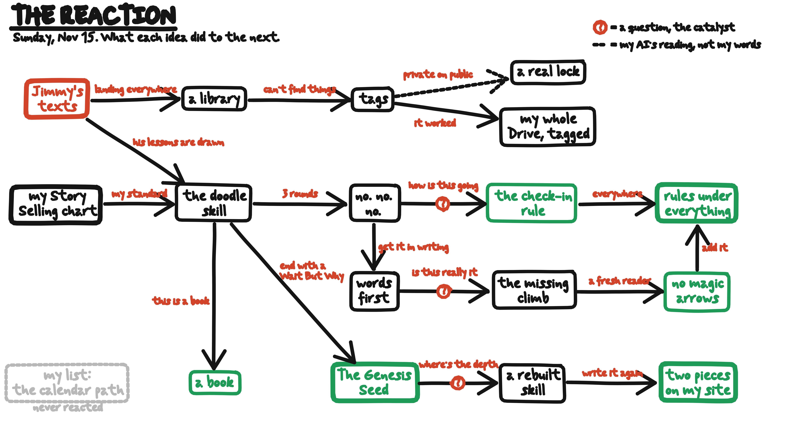
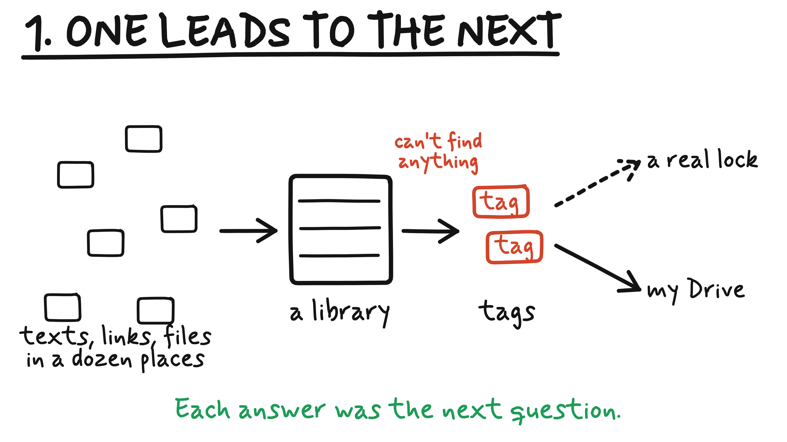
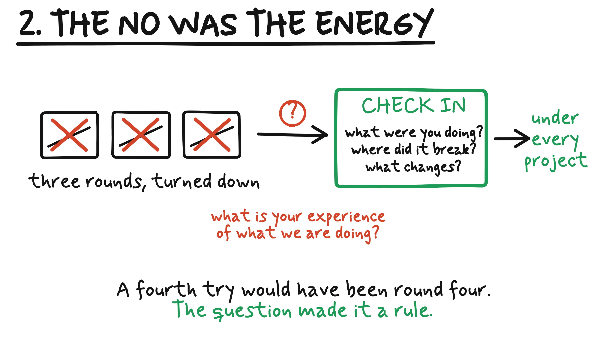
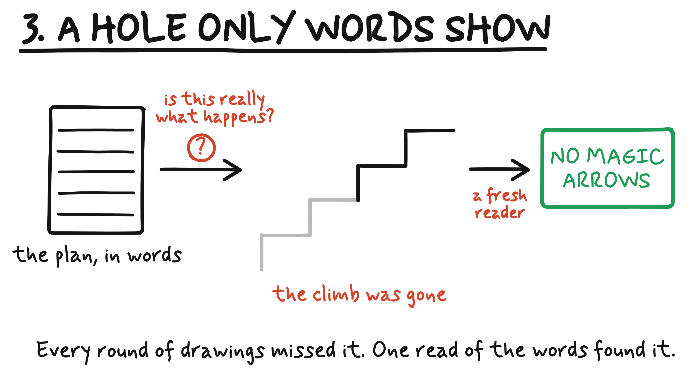

November 15, 2026
What One Idea Did To The Next
A side page to The Genesis Seed. The timeline there shows when things happened. This one shows what each idea did to the next, drawn the way organic chemistry draws a reaction.
Organic chemistry was my favorite subject in college. It's the only class I've ever taken that felt like the way I think.
You put two things in a flask with a catalyst. Then you follow the arrows and watch the electrons move. Something new comes out the other side. You can predict it, mostly. But there's usually more than one thing it could become.
That's the part the timeline couldn't show. Not when each thing happened. How each one turned into the next.
So here's Sunday, drawn as a reaction.

The boxes on the left are what went in: Jimmy's texts, and my Story Selling chart as the standard every drawing had to meet.
Each arrow is one idea turning into the next. The red words on the arrow are what carried it across: a problem, a "no," or a question.
The red question marks are the catalysts. In chemistry, a catalyst lowers the hump a reaction has to get over, and comes out the other side unchanged. On Sunday, whenever the reaction stalled, a question I asked got it moving again. It changed what came next, and then it was still there, ready to fire again.
A dashed arrow is my AI's reading of the record, not something I said out loud. There's one: the lock.
The gray box at the bottom left is my list, and the calendar path, the top item on it. It sat in the flask all day and never reacted.

The afternoon was a chain. Every answer raised the next question.
Jimmy's stuff was landing in a dozen places, so it got a library. A library you can't search is useless, so it got tags. Tags on my admin page, as best the record shows, made it obvious that private things were sitting on a public site, so the admin page got a real lock. That's the dashed arrow. And because tags worked, my whole Google Drive got them too.
No question mark needed. Each product was the next reagent.

In the evening the chain ran into a wall. Three rounds of drawings, three times I said no.
A fourth try would just have been round four. First I said: get it in writing before you draw anything. Then came the question: what's your experience of what we're doing right now?
That question turned three failures into a rule. When a round isn't working, stop and say what you were doing, where it broke, and what changes. By ten o'clock that rule was under everything I do.
The no's weren't wasted. They were the energy the reaction needed to get over the hump.

Once the plan was in words, I asked a second question: is this really what happens?
It wasn't. Jimmy's process builds a lesson as a climb: small yeses, one at a time, up to the big idea. In the drawings that climb was gone. Every round had missed it. One read of the words found it.
Then a fresh reader caught the same kind of gap in the fix itself, and that became a rule too: wherever one thing turns into another, show how.
Which is the rule this page is trying to follow.
Back at the doodle skill, two more things came off the reaction.
Early in the evening I said I wanted to end the session with a Wait But Why piece. That became The Genesis Seed.
And somewhere around nine, watching all of this run, I thought: this is a book. Nobody planned that. It's a side product, the kind that comes off a reaction while you're watching the main one.
The first draft of The Genesis Seed came out bare. I asked where the depth was. That rebuilt the Wait But Why skill from scratch, and the rebuilt skill wrote the piece again, plus the doodle piece. Those are the two on my site now.
Three things I can see now that I couldn't see on the timeline.
When it stalls, the catalyst is a question. Most of the day ran on its own, one product feeding the next. But every time it got stuck, it moved again because I stopped and asked something, not because I tried again.
A "no" isn't waste. It's energy. Three turned-down rounds made the check-in rule. Without them there's no rule.
The side products matter. The book wasn't the goal. It came off the main reaction while I was watching it run.
And the thing in the flask that never reacted is still there. It hasn't met its catalyst yet.